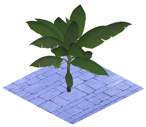

resetMaterial operation
resetMaterial
resetMaterial(target)
target selector Selects which material to reset.
| shape | Default. Only reset the material of the shape. |
| geometry | Only reset the material of the geometry. |
| all | Reset the materials of both the shape and the geometry. |
Resets the targeted material to the CGA default material (i.e. resets all material attributes).
Using resetMaterial without a parameter resets only the material of the shape. If the target is geometry or all and the geometry consists of multiple materials all of them are reset.
Related
Examples
Example

Lot --> primitiveQuad()
texture("stones.jpg")
set(material.reflectivity, 0.75)
set(material.specular.r, 1)
set(material.specular.g, 1)
set(material.specular.b, 1)
Stones.
i("plant.glb")
resetMaterial()
Flowers.
Using resetMaterial() to get rid of previous changes to the shape material. This guarantees all the material attributes (e.g. the texture) of the inserted asset are used.
Example 2
Init-->
i("car.glb")
Matler(0)
comp(m) { 0 : Matler(0.75) | 1 : Matler(1.25) }
Matler(tx)-->
alignScopeToAxes()
t(tx,0,0)
X.
t(0,0.5,0)
resetMaterial(geometry)
X.
Using resetMaterial(geometry) to reset the materials of the geometry to the CGA default material.